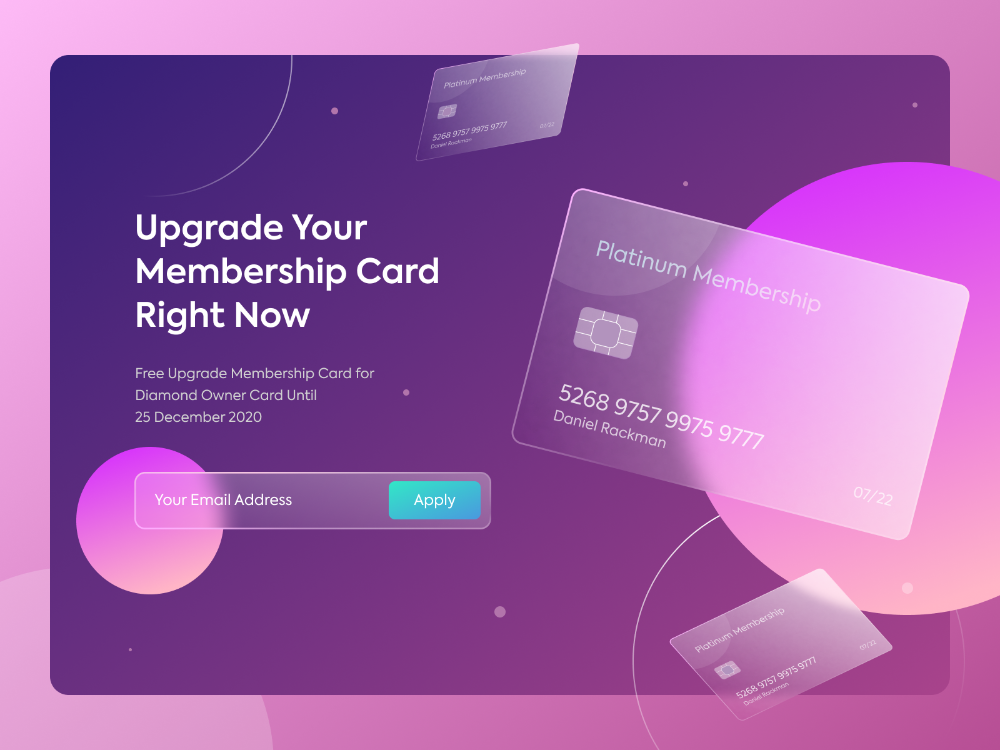

Glassmorphism
While the concept of glassmorphism itself isn’t new, the idea of bringing dimensionality to web design will hold significance this year. With Michal Malewicz coining the term in 2020, glassmorphism adds a sense of depth and texture to web designs, creating beautifully crafted blur effects with added transparency. These pixels enhance the almost opaque quality of frosted glass – perfect for designs with multiple layers.
